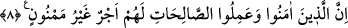

göstermediklerine işaret eder. Cimrilik utanılacak davranışların en önemlisi, yerilmiş
sıfatların en büyüğüdür. Bu sebeple; ‘zengin olup da onu Allah için harcamayan kimse,
içinde ruh olmayan cesed ya da meyve vermeyen ağaç gibidir’ demişlerdir.”
Şeyh Sa’dî (k.s.) da şöyle der:
Altını ve nimeti, senin iken şimdi ver,
Çünkü senden sonra bunlar artık senin emrinden çıkar.
Bir kimse saâdet yerini dünyadan götürür,
Âhiretteki nasîbini de yine bizzat kendisi getirir.
Müslüman o kimsedir ki oruç tutar da
Bir parça ekmeğini fakîre sabah öğünü olarak verir.
Böyle olmadıktan sonra zahmet çekmenin anlamı ne?
Yiyeceğini kendinden esirgeyip yine kendin yiyorsun!
Mum pervâneye acımadığından
Seyret mecliste nasıl yanmaktadır.
İyilik et ey çocuk,
Çünkü Âdemoğlu ihsan ile hayvan ise tuzak ile avlanır.
Büyüklük, cömertlik etmek ve vermektedir;
Diğeri boş söz lâfu güzâftır.
İbn Abbas’ın “zekât vermezler” ifâdesini şöyle tefsir ettiği rivâyet edilir: ‘Lâ ilâhe
illâllah: Allah’tan başka hiçbir ilâh yoktur!’ demezler; çünkü bu söz, nefislerin
zekâtıdır. Buna göre mânâ şöyle olur: Onlar tevhîde gelmek sûretiyle nefislerini
temizlemedikleri için kirli/neces kabul edilmiştir.
Keşfü’l-esrâr’da der ki: “Zekât, Kur’ân’da ya namazla birlikte ya da yalnız olarak iki
türlü zikredilmiştir. “O kimseler ki namazı kılar ve zekâtı verirler” vb. âyetlerde zekât
namazla birlikte kullanılmıştır. Bu zekât ile Allah’ın zenginlere farz kıldığı mâlî ibadet
kasdedilir. Zekâtın, “Tarafımızdan ona kalp yumuşaklığı ve zekât (temizlik) verdik”
(Meryem 19/13); “kendilerine, temizliği itibarıyla (zekâten) ondan daha iyisini ve
..” (Kehf 18/81); “verdiğiniz bir zekât ise, ..” (Rûm 30/39) ve “Kesinlikle felâha
ermiştir o tezkiye eden” (A’lâ 87/14) âyetlerinde olduğu gibi tek başına kullanıldığı
yerlerdeki anlamı ise temizlik, bolluk ve takvâdır.”
8. Şüphesiz îman edip sâlih amel işleyenler için başlarına asla kakılmayan bir
mükâfat vardır.
“Şüphesiz îman edip sâlih amel işleyenler için başlarına asla kakılmayan” ve bu